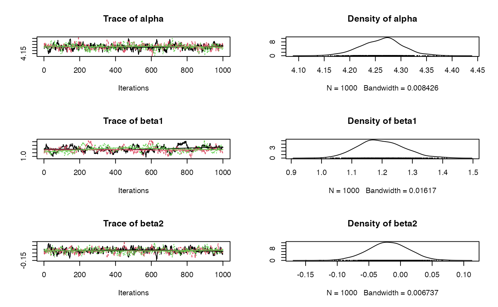
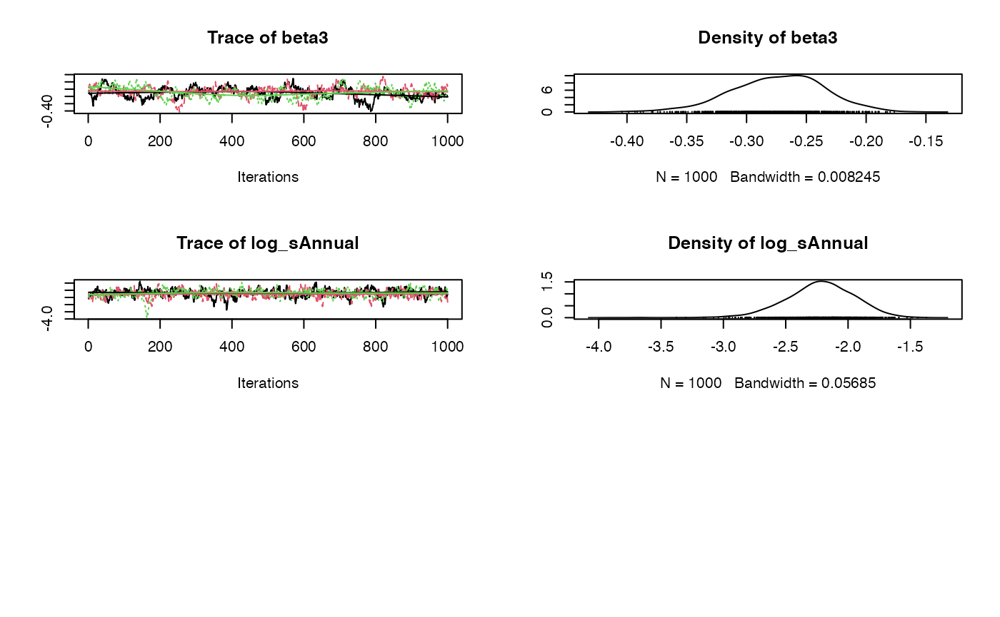

Introduction
jmbr (pronounced jimber) is an R package to facilitate analyses using Just Another Gibbs Sampler (JAGS).
It is part of the mbr family of packages.
Model
The first part of the model is where priors, random effects and the relationships of interest are set in JAGS.
Example model:
model <- model("model {
# Priors
alpha ~ dnorm(0, 10^-2) T(0,)
beta1 ~ dnorm(0, 10^-2)
beta2 ~ dnorm(0, 10^-2)
beta3 ~ dnorm(0, 10^-2)
# Random Effect
sAnnual ~ dnorm(0, 10^-2)
for(i in 1:nAnnual) {
bAnnual[i] ~ dnorm(0, sAnnual^-2)
}
# Prediction of Interest
for (i in 1:length(Pairs)) {
log(ePairs[i]) <- alpha + beta1 * Year[i] + beta2 * Year[i]^2 + beta3 * Year[i]^3 + bAnnual[Annual[i]]
Pairs[i] ~ dpois(ePairs[i])
}
}")- Priors include the mean and SD value, which is converted to precision by doing \(SD^-2\).
- T(0,) Truncates the value at zero.
New Expression
The new expression is written in R Code and is used to calculate derived parameters.
new_expr = "
for (i in 1:length(Pairs)) {
log(prediction[i]) <- alpha + beta1 * Year[i] + beta2 * Year[i]^2 + beta3 * Year[i]^3 + bAnnual[Annual[i]]
fit[i] <- prediction[i]
residual[i] <- res_pois(Pairs[i], fit[i])
}"Modify Data
This section modifies a data frame to the form it will be passed to the analysis code. The modified data is passed in list form.
Select Data & Random Effects
Select data is a named list specifying the columns to select and their associated classes and values as well as transformations and scaling options. Random effects gets the random effects definitions for an object as a named list, where bAnnual refers to the column name Annual in the data.
select_data = list("Pairs" = c(15L, 200L),
"Year*" = 1L,
Annual = factor()),
random_effects = list(bAnnual = "Annual"),All parameters in the data that are included in the model must be listed here. - If there are values in the Pairs column outside of the specified range, including NA’s, an error is thrown. - "Year*" = 1L indicates Year is of class integer.
Initial Values
Initial values of a parameter can be set prior to the analysis as a single argument function taking the modified data and returning a named list of initial values.
Unspecified initial values for each chain are drawn from the prior distributions.
Analysis Mode
Analysis mode can be set depending on the desired output.
set_analysis_mode("report")Modes:
-
quick: To quickly test code runs.- Chains = 2L, Iterations = 10L, Thinning = 1L
-
report: To produce results for a report.- Chains = 3L, Iterations = 500L
-
paper: To produce results for a peer-reviewed paper.- Chains = 4L, iterations = 1000L
Iterations = A count of the number of simulations to save per chain. Chains = A count of the number of chains.
Analyse
Analyse or reanalyse the model.
analysis <- analyse(model, data = data)
#> Registered S3 method overwritten by 'rjags':
#> method from
#> as.mcmc.list.mcarray mcmcr
#> # A tibble: 1 × 8
#> n K nchains niters nthin ess rhat converged
#> <int> <int> <int> <int> <int> <int> <dbl> <lgl>
#> 1 40 5 3 1000 1 18 2.22 FALSE
analysis <- reanalyse(analysis)
#> # A tibble: 1 × 8
#> n K nchains niters nthin ess rhat converged
#> <int> <int> <int> <int> <int> <int> <dbl> <lgl>
#> 1 40 5 3 1000 2 93 1.02 FALSE
coef(analysis)
#> Warning: The `simplify` argument of `coef()` must be TRUE as of mcmcr 0.4.1.
#> This warning is displayed once every 8 hours.
#> Call `lifecycle::last_lifecycle_warnings()` to see where this warning was generated.
#> # A tibble: 5 × 7
#> term estimate sd zscore lower upper pvalue
#> <term> <dbl> <dbl> <dbl> <dbl> <dbl> <dbl>
#> 1 alpha 4.26 0.0413 103. 4.18 4.35 0.000333
#> 2 beta1 1.19 0.0757 15.8 1.06 1.36 0.000333
#> 3 beta2 -0.0191 0.0319 -0.594 -0.0834 0.0429 0.552
#> 4 beta3 -0.272 0.0386 -7.09 -0.356 -0.202 0.000333
#> 5 log_sAnnual -2.22 0.281 -7.92 -2.80 -1.73 0.000333
plot(analysis) The zscore is \(mean / sd\).
# make predictions by varying year with other predictors including the random effect of Annual held constant
year <- predict(analysis, new_data = "Year")
# plot those predictions
library(ggplot2)
ggplot(data = year, aes(x = Year, y = estimate)) +
geom_point(data = bauw::peregrine, aes(y = Pairs)) +
geom_line() +
geom_line(aes(y = lower), linetype = "dotted") +
geom_line(aes(y = upper), linetype = "dotted") +
expand_limits(y = 0)